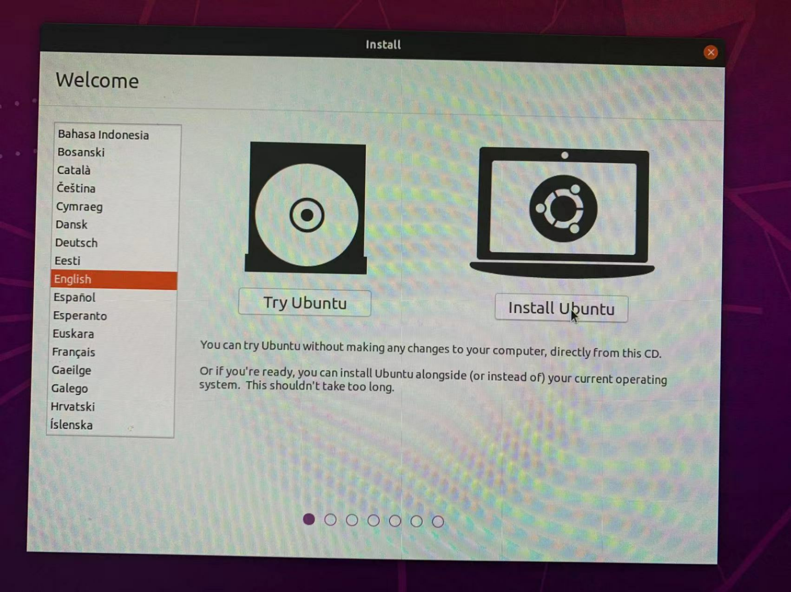
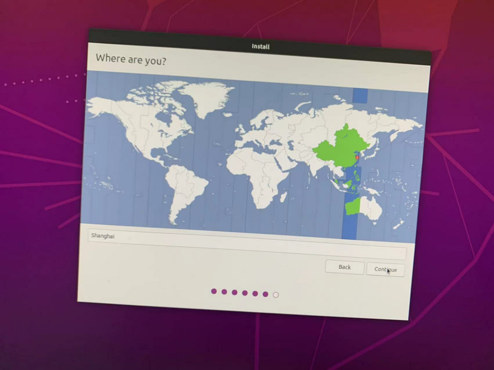
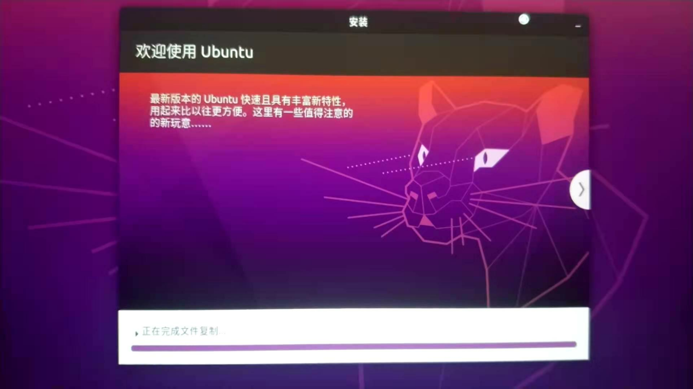

step1.进入Bios设置U盘启动，U盘启动后会出现黑色界面的引导界面。选择Ubuntu。进入到ubuntu安装界面、选择英文。
step2.选择布局

step3.连接网络

公司 Wifi：ZRYC01，密码：YcTdlTe2017
step4.选择最小安装。如果连了网络可以把下面两个选项也勾上。

step5.选择安装类型

step6.选择时区，shanghai
step7.设置用户

用户：smartgrow
密码：Grow_@0!6
step8.等待安装成功
